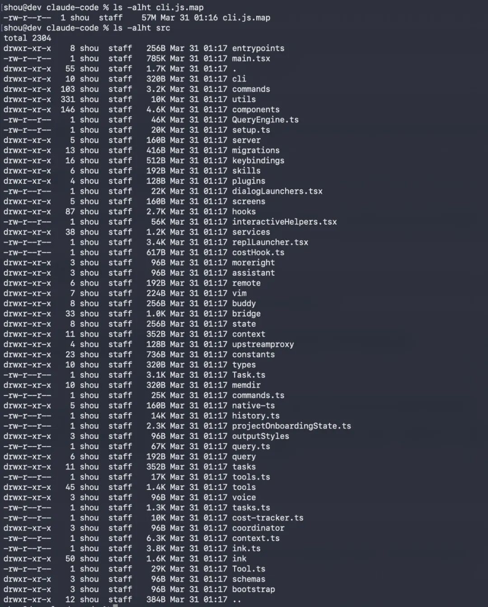
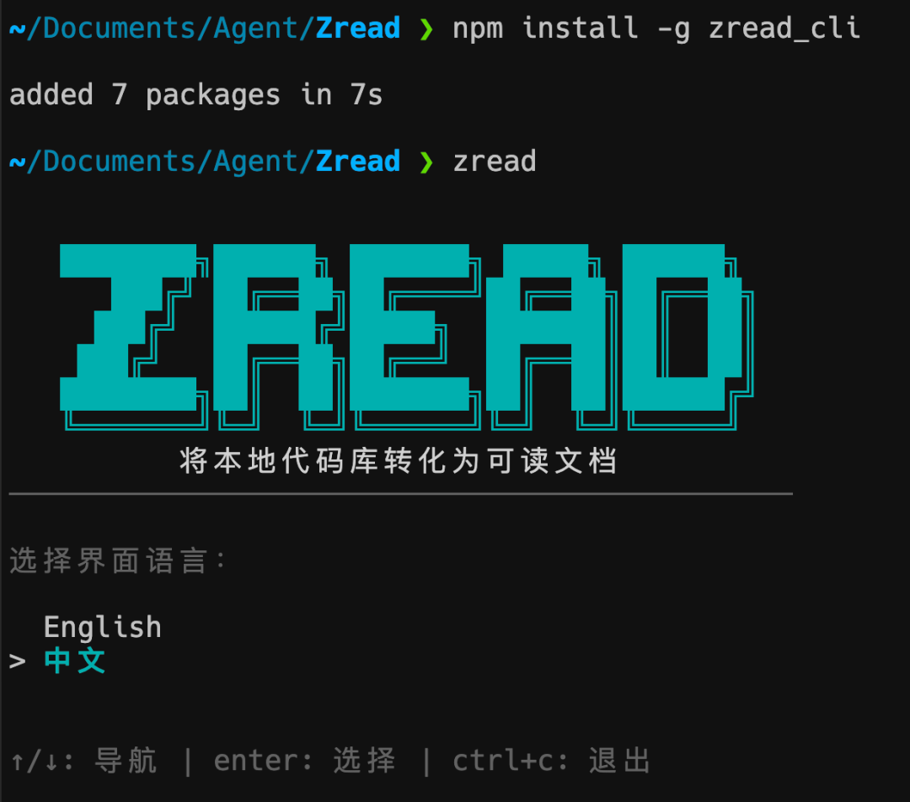
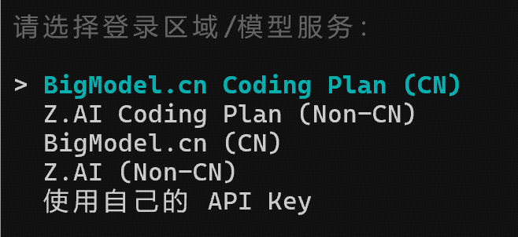
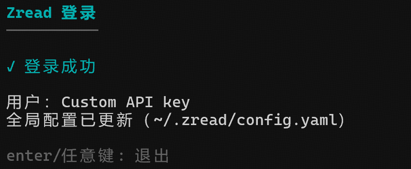
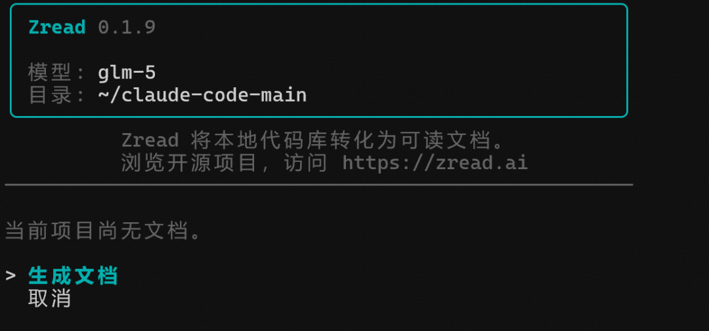
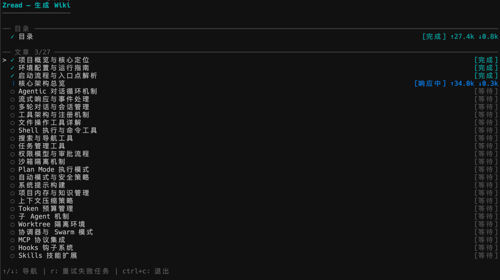
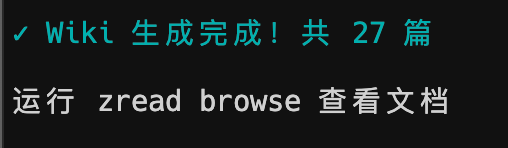
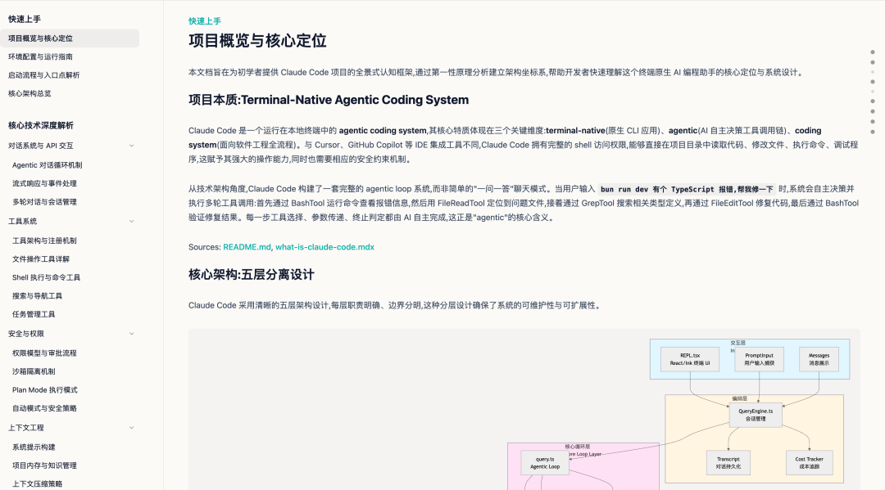
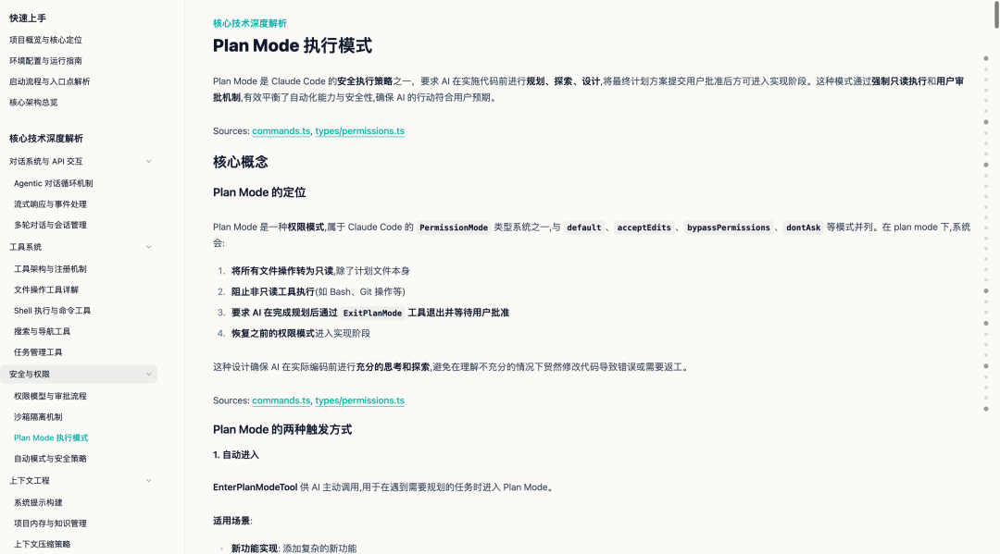
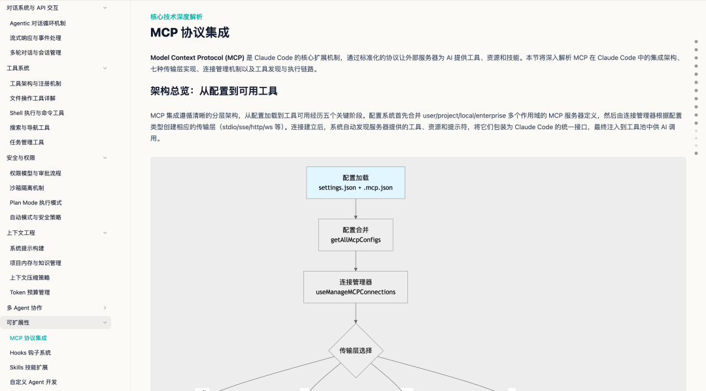

51 万行 TypeScript 代码，拿到手了怎么快速摸清楚？

最近登录 zread.ai，发现它们推出了一个挺实用的 CLI 工具，能帮你快速搞懂任何一个代码仓库的结构和架构。
而且是直接在本地跑的命令行工具，叫 Zread CLI。
除了你克隆下来的开源项目源码，自己本地的项目也好用。
01
Zread CLI
Zread CLI 是智谱 AI 搞一个命令行工具，你把它装到电脑上之后，在任意一个代码目录下执行一条命令。
它就能自动分析你的项目代码，然后生成一份结构清晰、超级全面的项目文档。

说白了就是给你的代码库自动写一份说明书。
使用方式简单到离谱，cd 到你的项目目录，然后输入 zread 就行了。
它默认是交互式的操作界面，用方向键加回车就能完成所有操作，不需要记什么复杂命令。
① 安装 Zread CLI
你可以看上面那个截图，只需要通过 npm 和 Homebrew 就能完成安装了。
安装很简单，两种方式选一个就行：
npm install -g zread_clibrew tap codegeex/homebrew-tap + brew install zread
装好之后第一次运行会引导你完成登录和默认配置，整个过程几分钟就搞定了。
跟着提示走就行，没啥复杂的东西。



② 开始解读你的项目
比如我把 Claude Code 的源码 clone 到本地电脑上一份了。
只需要在这个目录下，运行 zread 就行了。

Zread cli 会对你这个目录下面的源码进行解读。
Claude Code 源码：https://github.com/claude-code-best/claude-codehttps://github.com/Janlaywss/cloud-code
③ 看看效果
生成完之后，可以使用 zread browse 查看刚刚生成的文档。




这个命令行工具很适合帮你快速理解一个陌生项目的代码结构，比如刚接手别人的项目或者刚 clone 一个开源项目的时候，跑一下就能看到整体架构。
而且给本地项目沉淀基础文档，不用自己手动写 README 了。
还有就是给 AI Coding 工具提供更清晰的上下文。
比如你在用 Cursor、Claude Code 这些工具的时候，有一份好的文档能让 AI 更准确地理解你的项目。
这个基础 Wiki 就可以用 Zread CLI 生成。
和 DeepWiki 和 Zread 网页版不一样。
Zread CLI 能在本地跑。你电脑上的任何代码目录都行，公司内部项目、没开源的个人项目、刚 clone 下来的开源代码，全都支持。
DeepWiki：公开仓库解读，英文为主。 Zread 网页版：公开仓库解读，原生中文，功能丰富
而 Zread CLI 是本地代码库解读，任何目录都能用，命令行操作。
三个产品覆盖的场景不一样，但如果你想解读本地的代码，Zread CLI 是不错的选择。
而且其实可以把这个 CLI 接入到其他通用的 Agent 里面，缺项目上下文了。
先让 Zread CLi 去学习交付一份。
02
点击下方卡片，关注逛逛 GitHub
这个公众号历史发布过很多有趣的开源项目，如果你懒得翻文章一个个找，你直接关注微信公众号：逛逛 GitHub ，后台对话聊天就行了：